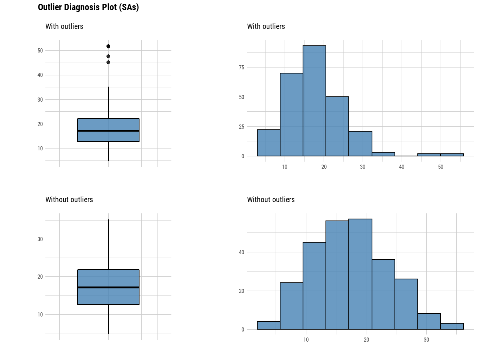
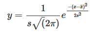
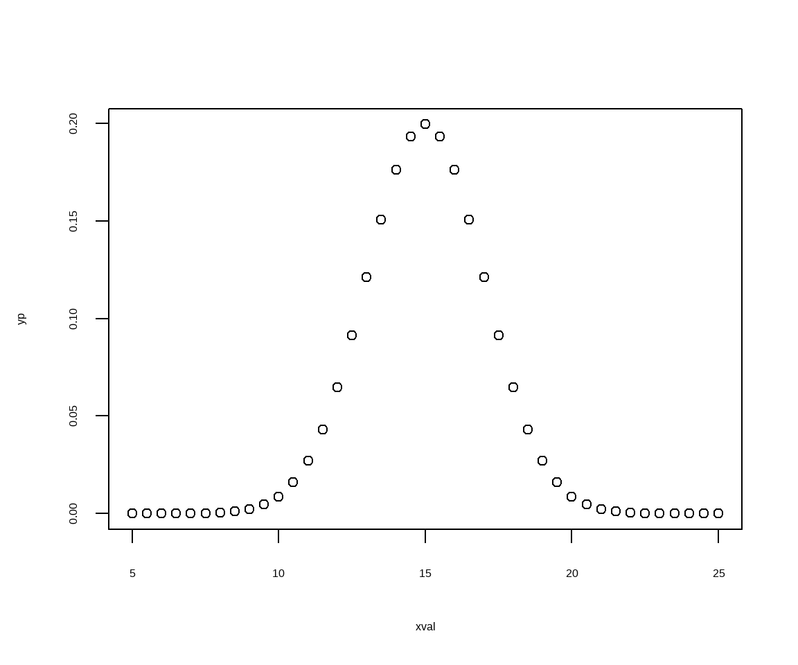
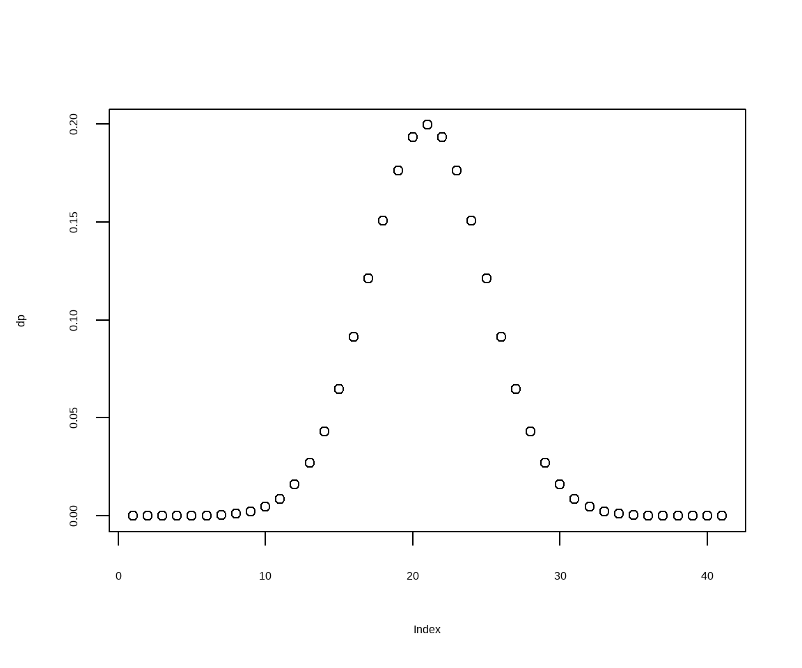
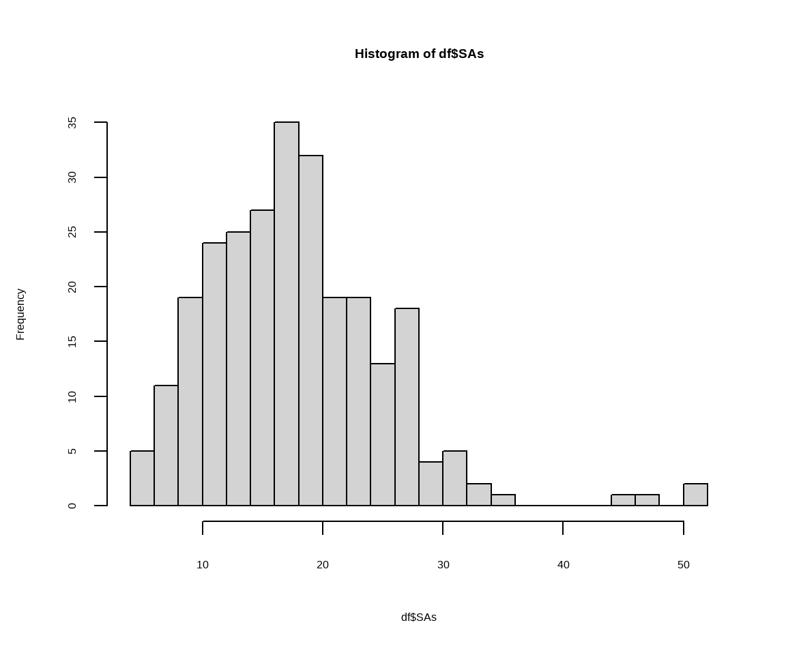
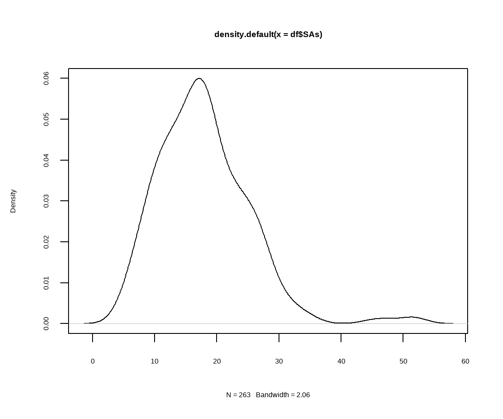
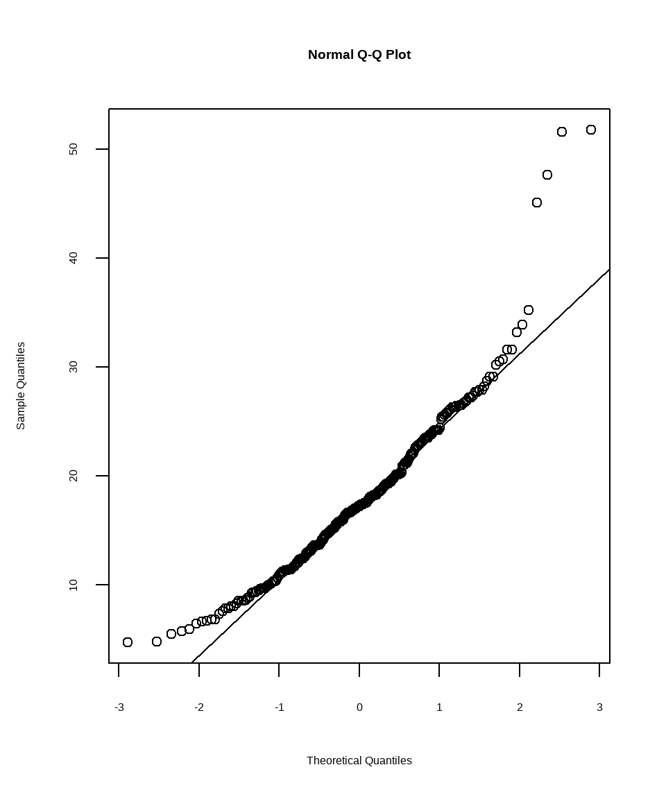
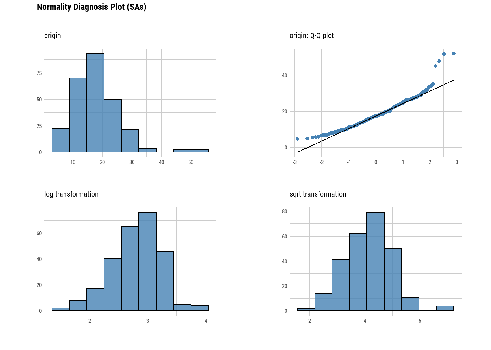
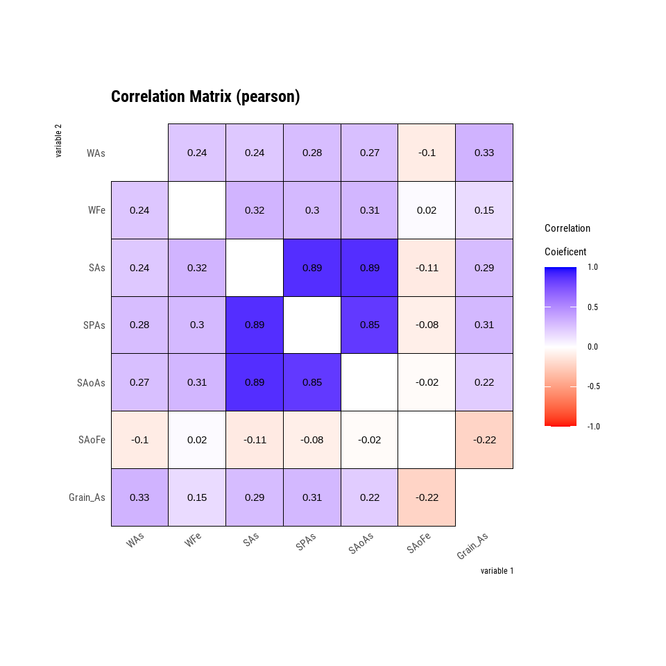

Table of Content
In this exercise We will use following R-packages:
# load library
library(tidyverse)
library(dlookr)
library(moments)
library(data.table)
library(DT)We will use arsenic (As) data in irrigation water, paddy soil and and rice grain in a contaminated cites from Bangladesh, name water_soil_rice_arsenic_data.csv. We import this data using read_csv(). This data set could be found here.
# define working directory
dataFolder<-"E:/Dropbox/GitHub/chemstat-r-github.io/Data/"
df<-read_csv(paste0(dataFolder,"water_soil_rice_arsenic_data.csv"))Data Quality Diagnosis
Data Quality Diagnosis is the first step before any statistical analysis. We use diagnose() function of dlookr package to use to explore following:
variables : variable names
types : the data type of the variables
missing_count : number of missing values
missing_percent : percentage of missing values
unique_count : number of unique values
unique_rate : rate of unique value. unique_count / number of observation
#diagnose(df) # all variables
diagnose(df, SAs, WAs, Grain_As) # Only soil, water and rice grain AS## # A tibble: 3 × 6
## variables types missing_count missing_percent unique_count unique_rate
## <chr> <chr> <int> <dbl> <int> <dbl>
## 1 SAs numeric 0 0 174 0.662
## 2 WAs numeric 0 0 167 0.635
## 3 Grain_As numeric 0 0 197 0.749Diagnosis of Numeric Variables
We may use diagnose_numeric(), diagnoses numeric(continuous and discrete) variables in a data frame returns more diagnostic information such as:
min : minimum value
Q1 : 1/4 quartile, 25th percentile
mean : arithmetic mean
median : median, 50th percentile
Q3 : 3/4 quartile, 75th percentile
max : maximum value
zero : number of observations with a value of 0
minus : number of observations with negative numbers
outlier : number of outliers
# diagnose_numeric(df) # all data
diagnose_numeric(df, SAs, WAs, Grain_As) # only three variables## # A tibble: 3 × 10
## variables min Q1 mean median Q3 max zero minus outlier
## * <chr> <dbl> <dbl> <dbl> <dbl> <dbl> <dbl> <int> <int> <int>
## 1 SAs 4.7 12.7 17.9 17.2 22.0 51.8 0 0 4
## 2 WAs 0.011 0.0745 0.130 0.119 0.175 0.458 0 0 7
## 3 Grain_As 0.094 0.245 0.326 0.313 0.385 0.845 0 0 7Diagnosis of Categorical Variables
diagnose_category() diagnoses the categorical(factor, ordered, character) variables of a data frame. The usage is similar to diagnose() but returns more diagnostic information such as:
variables : variable names
levels: level names
N : number of observation
freq : number of observation at the levels
ratio : percentage of observation at the levels
rank : rank of occupancy ratio of levels
diagnose_category(df, Variety, Land_type)## # A tibble: 8 × 6
## variables levels N freq ratio rank
## <chr> <chr> <int> <int> <dbl> <int>
## 1 Variety BR28 263 84 31.9 1
## 2 Variety IET 263 81 30.8 2
## 3 Variety Purbachi 263 38 14.4 3
## 4 Variety Ratna 263 34 12.9 4
## 5 Variety Minikate 263 19 7.22 5
## 6 Variety BR29 263 7 2.66 6
## 7 Land_type MHL 263 141 53.6 1
## 8 Land_type HL 263 122 46.4 2Diagnosing Outliers
diagnose_outlier() diagnoses the outliers of the numeric (continuous and discrete) variables of the data frame.
outliers_cnt : number of outliers
outliers_ratio : percent of outliers
outliers_mean : arithmetic average of outliers
with_mean : arithmetic average of with outliers
without_mean : arithmetic average of without outliers
diagnose_outlier(df, SAs, WAs, Grain_As )## # A tibble: 3 × 6
## variables outliers_cnt outliers_ratio outliers_mean with_mean without_mean
## * <chr> <int> <dbl> <dbl> <dbl> <dbl>
## 1 SAs 4 1.52 49.0 17.9 17.4
## 2 WAs 7 2.66 0.379 0.130 0.123
## 3 Grain_As 7 2.66 0.727 0.326 0.315Visualization of Outliers
plot_outlier() visualizes outliers of numerical variables(continuous and discrete) of data.frame. Usage is the same diagnose().
The plot derived from the numerical data diagnosis is as follows.
With outliers box plot
Without outliers box plot
With outliers histogram
Without outliers histogram
The following example uses diagnose_outlier(), plot_outlier(), and dplyr packages to visualize all numerical variables with an outlier ratio of 0.5% or higher.
df %>%
plot_outlier(diagnose_outlier(df, SAs) %>%
filter(outliers_ratio >= 0.5) %>%
select(variables) %>%
unlist())
Exploratory Data Analysis
In statistics, exploratory data analysis (EDA) is an approach to analyzing data sets to summarize their main characteristics, often with some basic statistics and visual methods.
Probability Distribution
A statistical distribution, or probability distribution, describes all the possible values and likelihoods that a random variable (a random variable is a variable whose value is unknown or a function that assigns values to each of an experiment’s outcomes) can take within a given range. This range will be bounded between the minimum and maximum possible values, but precisely where the possible value is likely to be plotted on the probability distribution depends on a number of factors. These factors include the distribution’s mean (average), standard deviation, skewness, and kurtosis (Source)..
In probability theory and statistics, a probability distribution is the mathematical function that gives the probabilities of occurrence of different possible outcomes for an experiment.It is a mathematical description of a random phenomenon in terms of its sample space and the probabilities of events (subsets of the sample space).(Wikipedia).
Probability Density function (PDF) is a statistical expression that defines a probability distribution (the likelihood of an outcome) for a discrete random variable (e.g., a stock or ETF) as opposed to a continuous random variable.
The normal distribution is a common example of a PDF, forming the well-known bell curve shape. It is also known as the Gaussian distribution, is a probability distribution that is symmetric about the mean, showing that data near the mean are more frequent in occurrence than data far from the mean.
The mean and standard deviation can be related to the Gaussian distribution - that gives the probability of observing a particular value of x. For a finite number of measurements, the Gaussian distribution can be approximated as:
https://rpubs.com/dgosser/802164

Suppose, a non-contaminates sites, the average (mean) soil As is 15 mg/kg with a standard deviation of 2. Substituting this into the Gaussian distribution formula:
s <- 2 # standard deviation
xmean <- 15 # mean
xval <- seq(5, 25,by=0.5) # data
xval## [1] 5.0 5.5 6.0 6.5 7.0 7.5 8.0 8.5 9.0 9.5 10.0 10.5 11.0 11.5 12.0
## [16] 12.5 13.0 13.5 14.0 14.5 15.0 15.5 16.0 16.5 17.0 17.5 18.0 18.5 19.0 19.5
## [31] 20.0 20.5 21.0 21.5 22.0 22.5 23.0 23.5 24.0 24.5 25.0No we can calculate Gaussian or noraml distribution using above formula.
# here we calculate a Gaussian distribution
yp <- (1/(s*sqrt(2*pi)))*exp(1)^((-(xval-xmean)^2)/(2*s^2))
yp## [1] 7.433598e-07 2.514754e-06 7.991871e-06 2.385932e-05 6.691511e-05
## [6] 1.762978e-04 4.363413e-04 1.014524e-03 2.215924e-03 4.546781e-03
## [11] 8.764150e-03 1.586983e-02 2.699548e-02 4.313866e-02 6.475880e-02
## [16] 9.132454e-02 1.209854e-01 1.505687e-01 1.760327e-01 1.933341e-01
## [21] 1.994711e-01 1.933341e-01 1.760327e-01 1.505687e-01 1.209854e-01
## [26] 9.132454e-02 6.475880e-02 4.313866e-02 2.699548e-02 1.586983e-02
## [31] 8.764150e-03 4.546781e-03 2.215924e-03 1.014524e-03 4.363413e-04
## [36] 1.762978e-04 6.691511e-05 2.385932e-05 7.991871e-06 2.514754e-06
## [41] 7.433598e-07plot(xval,yp) 
We can also get probability distribution using the command dnorm() distribution
dp <- dnorm(xval,xmean,s)
plot(dp)
The distance from the mean of a particular measurement can be discussed in terms of “deviations from the mean” as multiples of the standard deviation. For instance:
68.3% of measurements lie within plus or minus one standard deviation
95.5% within plus or minus two standard deviations
99.7% within plus or minus three standard deviations.
The R command for the cumulative distribution, which approaches 1, is pnorm():
cdp <- pnorm(xval,xmean, s)
plot(cdp)Normal Distribution
Many of parametric statistical tests including correlation, regression, t-test, and analysis of variance (ANOVA) require the data to follow a normal distribution or Gaussian distribution. The validity of these kind of tests depends on the distribution of the data.
Before using a parametric test, some preliminary tests need to be done to make sure that the test assumptions of “normal distribution” of data are met. We’ll show how to check the normality of the data by visual inspection and by significance tests.
In this data frame, SAs, column represents the soil total As (mg/kg) in paddy soils irrigated with As contaminated groundwater from shallow depth. Let check the distribution of soil As:
Visual Inspection of Normal Distribution
Here, we’ll describe how to check the normality of the data by visual inspection by:
Histogram
Kernel density Plots
Quantile-Quantile Plots
Histogram
You can create histograms with the function hist(x) to visualize the distribution of a numeric vector (x). The option freq=FALSE plots probability densities instead of frequencies. The option breaks= controls the number of bins.
hist(df$SAs, breaks = 20)
Kernel Density Plots
Kernel density plots are usually a much more effective way to view the distribution of a variable.
# Kernel Density Plot
d <- density(df$SAs) # returns the density data
plot(d) # plots the results
Quantile-Quantile Plots
qqnorm() is a generic function the default method of which produces a normal QQ plot of the values in y.
qqline() adds a line to a “theoretical”, by default normal, quantile-quantile plot which passes through the probs quantiles, by default the first and third quartiles.
#create Q-Q plot to compare this dataset to a theoretical normal distribution
qqnorm(df$SAs)
qqline(df$SAs)
Visualization of Normality using dlookr Package
We may also use plot_normality() function of dlookr pacakge to visualizes the normality of numeric data. The information that plot_normality() visualizes is as follows.
Histogram of original data
Q-Q plot of original data
histogram of log transformed data
Histogram of square root transformed data
plot_normality(df, SAs)
Normality Test
The R-base function shapiro.test() can be used to perform the Shapiro-Wilk test of normality for one variable (univariate):
shapiro.test(df$SAs)##
## Shapiro-Wilk normality test
##
## data: df$SAs
## W = 0.93076, p-value = 9.513e-10From the above output, the p-value < 0.05 implying that the distribution of the Soil As are significantly different from normal distribution. In other words, we can assume that Soil As is not-normally distributed.
Test of Normality using dlookr Package
normality() function of dlookr performs a normality test on multiple numerical data. Shapiro-Wilk normality test is performed. When the number of observations is greater than 5000, it is tested after extracting 5000 samples by random simple sampling.
The variables of tbl_df object returned by normality() are as follows.
statistic : Statistics of the Shapiro-Wilk test
p_value : p-value of the Shapiro-Wilk test
sample : Number of sample observations performed Shapiro-Wilk test
normality(df, SAs, WAs, Grain_As)## # A tibble: 3 × 4
## vars statistic p_value sample
## <chr> <dbl> <dbl> <dbl>
## 1 SAs 0.940 0.00000000731 263
## 2 WAs 0.940 0.00000000731 263
## 3 Grain_As 0.940 0.00000000731 263Measures of Skewness and Kurtosis
Skewness measures the symmetry of the distribution and this value can be positive or negative.
A negative value indicates more values are concentrated on the left side (tail) of the distribution. the most frequent values are high; tail is toward low values (on the left-hand side). Generally, Mode > Median > Mean.
A positive value indicates that the tail is on the right side of the distribution. The most frequent values are low; tail is toward the high values (on the right-hand side). Generally, Mode < Median < Mean.
A value of zero indicates that there is no skewness in the distribution at all, meaning the distribution is perfectly symmetrical or normally distributed.
To calculate the skewness and kurtosis of Soil As, we can use skewness() and kurtosis() functions from the moments library in R:
skewness(df$SAs)## [1] 1.211611Positive values indicates, this indicates that the distribution is right-skewed. This confirms what we have seen saw in the histogram and density plots.
Kurtosis is a measure of whether or not a distribution is heavy-tailed or light-tailed relative to a normal distribution. The kurtosis of a normal distribution is 3.
kurtosis(df$SAs)## [1] 6.399313Since the kurtosis is > 3, which indicates that the distribution of Soil As has more values in the tails compared to a normal distribution as we have seen in the QQ plots
The moments library also offers the jarque.test() function, which performs a goodness-of-fit test that determines whether or not sample data have skewness and kurtosis that matches a normal distribution. The null and alternative hypotheses of this test are as follows:
Null Hypothesis: The dataset has a skewness and kurtosis that matches a normal distribution.
Alternative Hypothesis: The dataset has a skewness and kurtosis that does not match a normal distribution.
jarque.test(df$SAs)##
## Jarque-Bera Normality Test
##
## data: df$SAs
## JB = 190.97, p-value < 2.2e-16
## alternative hypothesis: greaterThe p-value is found to be < 0.05. We reject the null hypothesis. We have sufficient evidence to say that this Soil As has a skewness and kurtosis that is different from the normal distribution
find_skewness() of dlookr package searches for variables with skewed data. This function finds data skewed by search conditions and calculates skewness.
## Calculation of skewness
df %>% select(SAs, WAs, Grain_As) %>%
find_skewness(value = TRUE)## SAs WAs Grain_As
## 1.212 0.977 1.114We van also compute the skewness & filtering with threshold
df %>% select(SAs, WAs, Grain_As) %>%
find_skewness(value = TRUE, thres =1)## SAs Grain_As
## 1.212 1.114Data Transformation for Normality
In statistical data analysis, transformation is the replacement of one variable by one function of that variable: for example, replacing one variable x by the square root or by the logarithm of x. The transformation is a replacement that changes the shape of a distribution or relationship.
There are many reasons for transformation (source: http://fmwww.bc.edu/repec/bocode/t/transint.html)
1. Reducing skewness or transforming Data for Normality
2. Equal spreads
3. Linear relationships
4. Additive relationshipsData Transformation Methods
In this section, you will get a brief overview of these three transformation techniques and when to use them.
Square Root Transformation
The square root method is typically used when your data is moderately skewed. Now using the square root (e.g., sqrt(x)) is a transformation that has a moderate effect on distribution shape. It is generally used to reduce right skewed data. Finally, the square root can be applied on zero values and is most commonly used on counted data.
sqrt(x) for positively skewed data,
sqrt(max(x+1) - x) for negatively skewed data
Power Transformation
a power transform is a family of functions that are applied to create a monotonic transformation of data using power functions.
Log Transformation is a strong transformation that has a major effect on distribution shape. This technique is, as the square root method, oftenly used for reducing right skewness. Worth noting, however, is that it can not be applied to zero or negative values.
log10(x) for positively skewed data,
log10(max(x+1) - x) for negatively skewed data
The Box-Cox transformation use a suitable exponent (Lambda = l) to transform skewed data.
transform() function of *dlookr performs data both Standardization** and transform data for normalization (resolve skewness).
Standardization
“zscore” : z-score transformation. (x - mu) / sigma
“minmax” : minmax transformation. (x - min) / (max - min)
Resolving Skewness
“log” : log transformation. log(x)
“log+1” : log transformation. log(x + 1). Used for values that contain 0.
“sqrt” : square root transformation.
“1/x” : 1 / x transformation
“x^3” : x^3 square transformation
df$logSAs = transform(df$SAs, method = "log")# summary of transformation
summary(df$logSAs)## * Resolving Skewness with log
##
## * Information of Transformation (before vs after)
## Original Transformation
## n 263.0000000 263.00000000
## na 0.0000000 0.00000000
## mean 17.8869962 2.80041699
## sd 7.3877135 0.41906961
## se_mean 0.4555459 0.02584094
## IQR 9.3500000 0.55173904
## skewness 1.2185725 -0.35448139
## kurtosis 3.4880000 0.31839421
## p00 4.7000000 1.54756251
## p01 5.6240000 1.72689330
## p05 7.8200000 2.05665551
## p10 9.4200000 2.24282611
## p20 11.5400000 2.44581026
## p25 12.7000000 2.54157099
## p30 13.6000000 2.61006979
## p40 15.7800000 2.75874009
## p50 17.2000000 2.84490938
## p60 18.6000000 2.92316158
## p70 20.2640000 3.00884486
## p75 22.0500000 3.09331003
## p80 23.5000000 3.15700042
## p90 26.5000000 3.27714473
## p95 29.0600000 3.36935407
## p99 46.0500000 3.82938344
## p100 51.8000000 3.94739015plot(df$logSAs)Power transformation (Box-Cox)
Power Transform uses the maximum likelihood-like approach of Box and Cox (1964) to select a transformation of a univariate or multivariate response for normality.
The following expression gives the Box-Cox functions transformations for various values of lambda:

First we have to calculate appropriate transformation parameters using powerTransform() function of car package and then use this parameter to transform the data using bcPower() function.
library(car)powerTransform(df$SAs)## Estimated transformation parameter
## df$SAs
## 0.2605306df$SAs.bc<-bcPower(df$SAs, 0.2605306)
hist(df$SAs.bc)Descriptive Statistics
Descriptive statistics are used to describe the basic features of the data in a study. They provide simple summaries about the sample and the measures. Together with simple graphics analysis, they form the basis of virtually every quantitative analysis of data.
We use describe() function from dloookr package to computes descriptive statistics for numerical data. The descriptive statistics help determine the distribution of numerical variables. L
The variables of the tbl_df object returned by describe() are as follows.
n : number of observations excluding missing values
na : number of missing values
mean : arithmetic average
sd : standard deviation
se_mean : standard error mean. sd/sqrt(n)
IQR : interquartile range (Q3-Q1)
skewness : skewness
kurtosis : kurtosis
p25 : Q1. 25% percentile
p50 : median. 50% percentile
p75 : Q3. 75% percentile
p01, p05, p10, p20, p30 : 1%, 5%, 20%, 30% percentiles
p40, p60, p70, p80 : 40%, 60%, 70%, 80% percentiles
p90, p95, p99, p100 : 90%, 95%, 99%, 100% percentiles
des.stat<-describe(df, SAs, WAs, Grain_As)
datatable(as.data.frame(des.stat),
rownames = T, options = list(pageLength = 10, scrollX = TRUE, round)) %>%
formatRound(columns = 2:19, digits = 3)The describe() function supports the group_by() function syntax of the dplyr package. Following function calculate descriptive testatrices of Soil, Water and Grain As of diffrent landtypes
stat.landtype<-df %>%
group_by(Land_type) %>%
describe(SAs, WAs, Grain_As)
datatable(as.data.frame(stat.landtype),
rownames = T, options = list(pageLength = 10, scrollX = TRUE, round)) %>%
formatRound(columns = 3:19, digits = 3)Let check descriptiave statisics of grain As of diffrent rice varieties
stat.variety<-df %>%
group_by(Variety) %>%
describe(Grain_As)
datatable(as.data.frame(stat.variety),
rownames = T, options = list(pageLength = 10, scrollX = TRUE, round)) %>%
formatRound(columns = 3:19, digits = 3)EDA of Bivariate Data
correlate() function of **dlookr”” calculates the correlation coefficient of all combinations of numerical variables of data set.
df %>% select(WAs, WFe, WFe, SAs, SPAs, SAoAs, SAoFe, Grain_As) %>%
correlate() ## # A tibble: 42 × 3
## var1 var2 coef_corr
## <fct> <fct> <dbl>
## 1 WFe WAs 0.243
## 2 SAs WAs 0.235
## 3 SPAs WAs 0.281
## 4 SAoAs WAs 0.275
## 5 SAoFe WAs -0.0999
## 6 Grain_As WAs 0.326
## 7 WAs WFe 0.243
## 8 SAs WFe 0.321
## 9 SPAs WFe 0.300
## 10 SAoAs WFe 0.314
## # … with 32 more rowsplot.correlate() visualizes the correlation matrix.
df %>% select(WAs, WFe, WFe, SAs, SPAs, SAoAs, SAoFe, Grain_As) %>%
correlate() %>%
plot()